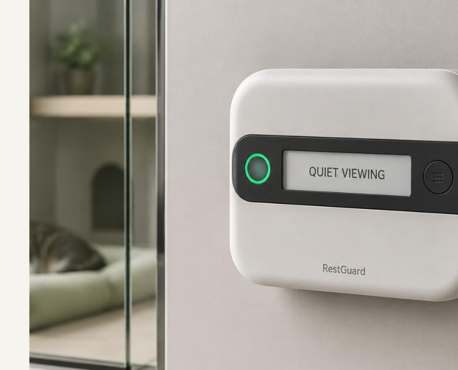

A · Portfolio
Renders, exploded view, app, report
Communicate intent. This website lives here.
Prototype lab / Proof of concept
This is a designed system, not yet a validated welfare product. The next evidence is measured false detections — not a shinier render.

Communicate intent. This website lives here.
Validate sensing and the score. The Tracer-like board is this chapter. About $115 in parts, excluding labour.
Size, mounting, and whether staff will actually look at it.
Reliability and workflow — only after empty-enclosure or simulated storefront tests.
Validation
10 people × 10 approaches, varied angles. Pass-bys stay rare.
Fixture cycles, not wishful counting.
Timestamp the event and the ring.
Audit storage and payloads. No waveform, image, or identifier.
Five staff, three tasks, no lecture.
No accessible loose part. Pull the strap on purpose.
Pilot rule: never create extra disturbance to test the device. Begin with simulations and staff-approved observation. Stop if guidance becomes confusing or unsafe.
Risks we write down
Ethics
Site approval and an animal-care professional come before any live-environment pilot. Staff procedures always outrank RestGuard. Choice and control, as welfare guidance describes them, are created by housing and management — not by a light ring.
Five lenses
Sensors + controller on one clock.
Form, mount, repair, cream and sage.
Visitor sentence + staff counts.
No recording. No emotion label.
Measurable criteria, including failure.
Bench → false detections → placement → does guidance change behaviour?
Portfolio reflection
RestGuard translates an ambiguous social problem into measurable requirements while keeping uncertainty visible. Its strongest future evidence would not be a more impressive picture, but documented prototype failures, calibration results, and user feedback.
Yulin Zhang · August 2026 · All dimensions, costs, and thresholds are proposed design values unless attributed to a source.